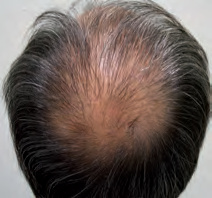
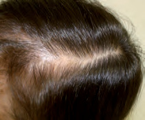
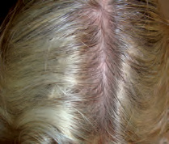
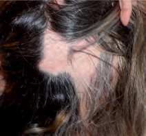
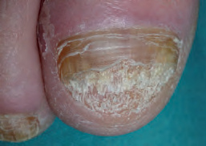
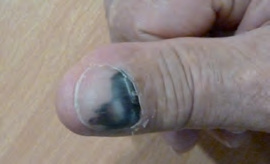
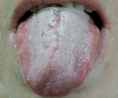

“Se me cae” y “me estoy quedando sin pelo” no son la misma consulta
El efluvio aumenta la caída con densidad relativamente conservada; la alopecia androgenética miniaturiza y reduce densidad sin caída llamativa. Placas lisas sugieren areata; pérdida de orificios foliculares, eritema o escama perifolicular sugieren cicatriz.
Eritema, escama, pústulas, costras, cicatriz y presencia de orificios foliculares.
Frontotemporal, vértex, ensanchamiento de la raya, difuso, en placas u ofiásico.
Sobre varios mechones no lavados inmediatamente antes; anota si extraes más cabellos de lo esperado y en qué zonas.
Inicio, parto o enfermedad 2–3 meses antes, pérdida de peso, fármacos, dieta, menstruación, hiperandrogenismo y antecedentes autoinmunes.
| Patrón | Claves clínicas | Pruebas iniciales |
|---|---|---|
| Androgenética | Entradas/vértex en varón; ensanchamiento de raya y corona en mujer; miniaturización, tracción negativa. | Clínico. Perfil de hiperandrogenismo solo si hirsutismo, acné intenso, ciclos irregulares u otros datos. |
| Efluvio telógeno | Caída difusa brusca 2–3 meses tras desencadenante; densidad bastante conservada, tracción positiva. | Hemograma, ferritina y TSH si persistente o contexto compatible; ampliar según historia. |
| Alopecia areata | Placas lisas bien delimitadas, pelos en signo de exclamación, cejas/barba y cambios ungueales posibles. | Clínico/dermatoscópico. Estudio tiroideo o autoinmune dirigido, no batería universal. |
| Cicatricial | Pérdida de orificios, brillo, eritema/escama perifolicular, dolor, quemazón o pústulas. | Derivación preferente: la biopsia de borde activo puede definir el proceso. |

Miniaturización progresiva con conservación de los orificios foliculares.
Recopilación Dermatología 2025 · pág. 32.
La raya se ensancha antes de que el cuero cabelludo quede completamente descubierto.
Recopilación Dermatología 2025 · pág. 32.
Mucha caída percibida con poca pérdida visible de densidad.
Recopilación Dermatología 2025 · pág. 33.
Placa no cicatricial: superficie lisa y orificios conservados.
Recopilación Dermatología 2025 · pág. 34.La analítica debe responder una sospecha, no sustituir la exploración
Una ferritina baja, una alteración tiroidea o un hiperandrogenismo pueden contribuir, pero no explican por sí solos cualquier pérdida capilar. Documenta el patrón y fotografías con raya y luz reproducibles.
Busca desencadenante 2–3 meses antes y explica que la recuperación de volumen tarda más que el cese de caída.
El objetivo es frenar miniaturización; los resultados se valoran en meses y se mantienen mientras continúa el tratamiento.
Puede repoblar espontáneamente; extensión, edad, uñas y duración ayudan a pronosticar y decidir tratamiento.
Derivación rápida para detener destrucción folicular irreversible.
Habla de meses, mantenimiento y seguridad antes de prescribir
El minoxidil tópico es opción habitual en alopecia androgenética; puede producir irritación y caída transitoria inicial, y el beneficio se pierde tras suspenderlo. Concentración, frecuencia, embarazo y comorbilidades deben revisarse en la ficha del producto.
Alopecia androgenética
- Minoxidil tópico en hombres y mujeres según presentación autorizada.
- Finasterida oral o tópica se reserva al patrón masculino con información sobre efectos adversos y riesgo reproductivo.
- Antiandrógenos y minoxidil oral son usos especializados/fuera de indicación en muchos escenarios.
- Fotografías comparables a los 6 y 12 meses; no valorar a las pocas semanas.
Efluvio y areata
- Trata la causa demostrada; no suplementos si no hay déficit.
- En efluvio, explicación pronóstica y cuidado normal del cabello son parte del tratamiento.
- Areata pequeña: observación o corticoide tópico/intralesional según edad y preferencia.
- Areata extensa o rápida: Dermatología para terapias sistémicas y apoyo psicológico.
Una uña amarilla no demuestra hongo; una mancha negra no es siempre trauma
Psoriasis, microtrauma, dermatitis, liquen plano y tumores imitan onicomicosis. Antes de un antifúngico oral, toma muestra adecuada de detritos subungueales o lámina proximal activa para examen micológico.

El aspecto es compatible, pero el tratamiento sistémico debe apoyarse en confirmación micológica.
Recopilación Dermatología 2025 · pág. 61.
Debe desplazarse distalmente a medida que crece la lámina.
Recopilación Dermatología 2025 · pág. 60.
Heterogeneidad, distrofia y extensión a piel periungueal requieren derivación preferente.
Recopilación Dermatología 2025 · pág. 60.Si es limitada y sin matriz puede bastar laca prolongada; afectación extensa/matriz suele requerir sistémico tras revisar hígado e interacciones.
El borde pigmentado debe avanzar hacia distal. Si no se mueve, reabre el diagnóstico.
Pitting, onicolisis y mancha de aceite sugieren psoriasis; pterigión o adelgazamiento puede sugerir liquen plano.
Una sola uña, banda ensanchada, color irregular, distrofia o pigmento periungueal justifican valoración dermatológica.
Raspa suavemente, palpa y registra cuánto lleva
La candidiasis pseudomembranosa se desprende y deja base eritematosa; una placa blanca fija no debe etiquetarse de hongo. Toda úlcera o lesión oral persistente, indurada o inexplicada necesita inspección completa y circuito de diagnóstico.

Placa blanquecina desprendible; revisa antibióticos, corticoide inhalado, prótesis, diabetes e inmunosupresión.
Recopilación Dermatología 2025 · pág. 59.Exploración mínima
- Labios, mucosa yugal, encías, paladar, lengua por todas sus caras y suelo de boca.
- Retira prótesis y palpa induración.
- Busca adenopatías cervicales.
- Pregunta por tabaco, alcohol, pérdida de peso, dolor al tragar y duración.
- Fotografía con escala si vas a revisar evolución.
| Patrón | Claves | Conducta |
|---|---|---|
| Afta recurrente | Úlcera dolorosa redonda con halo eritematoso, cura en 7–14 días; pregunta por genitales, ojo, digestivo y fármacos si atípica. | Analgesia/tópico y estudio dirigido si mayor, múltiple, recurrente o sistémica. |
| Candidiasis | Pseudomembrana desprendible o eritema bajo prótesis; escozor. | Antifúngico local y corregir predisponente; valorar sistémico si extensa/esofágica. |
| Glosodinia | Ardor crónico con exploración normal, a menudo peor a lo largo del día. | Diagnóstico de exclusión: hierro/B12/folato, glucosa, tiroides, fármacos, xerostomía y causas locales. |
| Lesión potencialmente maligna | Placa blanca o roja fija, úlcera que no cura, induración, sangrado o adenopatía. | Derivación preferente para valoración y biopsia; no encadenar tratamientos empíricos. |
Deriva por actividad destructiva o duda persistente
Con diagnóstico razonable, estudio dirigido y plan de revisión.
Inflamación perifolicular, síntomas y pérdida de orificios: el tiempo condiciona la pérdida permanente.
No se desplaza, banda nueva/cambiante, una sola uña, distrofia o extensión periungueal.
Úlcera, placa roja/blanca o masa indurada que no cura en unas 2–3 semanas, especialmente con tabaco/alcohol o adenopatía.
Referencias utilizadas
- British Association of Dermatologists. Información clínica sobre alopecia areata.
- NICE. Suspected cancer: recognition and referral — oral cancer.
- Actualización Dermatología 2025 - Recopilación, capítulos 5 y 9. Fuente secundaria y procedencia de las fotografías.